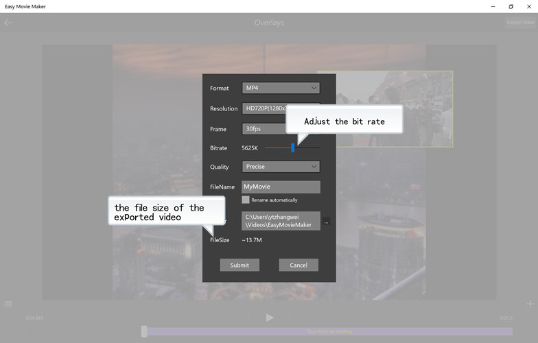

Click the "Export Video" button in the upper right corner of the screen to pop up the save dialog box, adjust the file size by setting the "Bitrate". The higher the bit rate, the higher the video resolution is, and the larger the exported file size
